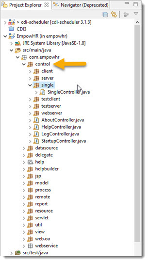
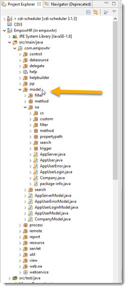
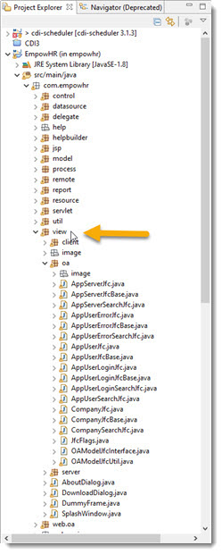
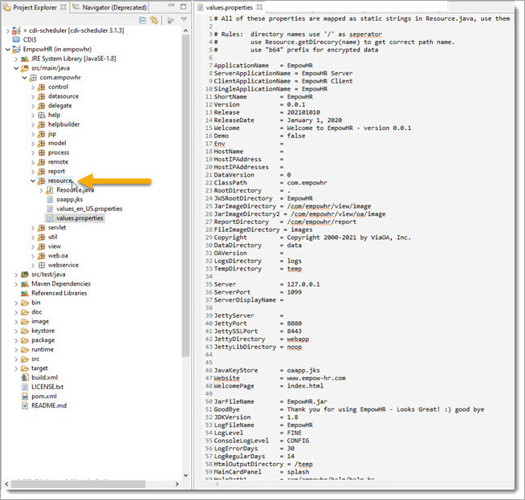

Take a moment to look at Code. The code generation uses a combination of techniques:
1. template project, filling in using a small tag language. OABuilder defaults to using the OATemplate project.
2. code generation, directly create files (source, resource, config, etc).
3. Base classes that have subclass that can be used to overwrite methods.
4. Report generation that uses html/xml engine to run as templates
The code generation supports adding ""callbacks’ the generated model objects, propertys, links, etc.
The project is generated using Model/View/Control structure, and directories that match.
The Controller packages are responsible for managing specific
functionality.

The Model package has the data/entity objects ("./model/oa/*.java"), and the "./model/*Model.java" classes are used to configure the object relationships and rules.

The View packages have the User Interface classes, each named after the Model Objects.

The Resource package has runtime parameters and default values.

For now, that is a good start for reviewing the source code - we will look more later.